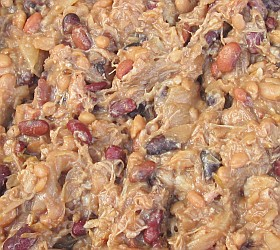

Moussieu l'Rédacteu,
Mes pensées s'envolent souvent dans la direction d'Jèrri et j'pense à mes p'tits jours siez Papa à La Forge à St. Ouën. Et j'êprouve à envisagi la vie trantchil'ye dé chu temps-là, et mes visites à ma grand'grand'méthe (né Lîsabé L'Brun, 1806 - 1895), au Ménage ès Feuvres, sustout au vendrédi pour aver eune gâche à fouée toute caude en sortant du fou quand ou fouângnait.
Quand j'vai les tinnes dé "Pork and beans" ichîn en Améthique, v'là tchi m'ramémouaithe qué y'avait pus qué la pâte dé pain tch'allait dans l'grand fou. Y'avait les pais, Nou l's appelait même des "Pais au fou." Combein d'fais qu'j'ai veu la pouôrre vielle grand'grand'méthe les prépather. A c'menchi, i' fallait un pot à lait. Et pis un piot ou deux, et un haut d'pid. eune quantité d'fèves, dé pais d'mai et d'gros bliancs pais sés, des châlottes ou d's ouognons mînchis, et du sé.
Ou m'ttait les pais à tremper pour une niet, et pis oulle en empliait les trais parts du pot. Auprès ch'la ou vèrsait d'l'ieau jusqu'au haut du pot et l'couvrait atout eune vielle assiette et l'amathait atout du gris papi. auve lé haut du pot bein amathé d'même, il 'tait prêt à mett' dans l'fou en enfouânnant l'pain. Auprès aver halé l'pain du fou (l's anciens appelaient ch'la "La r'traite" du pain) ou laîssait la potée d'pais dans l'fou à tchuithe douochement acouothe eune heuthe ou deux, et l'fricot 'tait prêt à sèrvi. Châtchun paîvrait à san goût. Man bouanhomme! L'ieau m'veint à la bouoche quand j'y pense. Nou-s'en litchait les babinnes, et v'la tchi vouos faîsait router à l'arbours, sans doute. Ch'est la r'nommée des pais! Et nou pouvait r'caûffer l'reste lé lendemain si y'en avait, et il 'tait aussi bouan. Les villais portaient lus potées siez les boulangièrs pour tchuithe dans l'grand fou toute la niet, et allaient les qu'si à la boulanguethie en temps pour dêjeuner. Il' en faîsaient lus dêjeuner du Dînmanche tandi qu'à la campangne nou-s-avait l'fricot en hivé au r'pas du sé, lé pus souvent au vendrédi, car ch'tait l'jour que nou fouângnait.
Pour faithe ses fanmeuses gâches à fouée, grand'grand'méthe prannait d'la pâte et les faîsait comme des p'tits pains gros comme lé poing un co tchuits, ou même pus gros. Pour les tchuithe ou les m'ttait chîn minnutes ou pus à la dgeule tandi qué l'fou 'tait à r'penti, d'vant enfouânner. Ou m'en donnait ieune toute caude, bein embeurrée, et pis oulle env'loppait l's autres dans un lînge pour les garder caudes jusqu'au r'pas. Il' 'taient pûtôt souol'vées, et sans doute bein appétissantes. Y'avait des gens tchi les m'ttaient à tchuithe à la r'traite du pain à la pliaiche dé les mett' à la dgeule dévant enfouânner. V'la tchi n'faîsait pon d'difféthence. d'eune manniéthe ou d'l'autre ch'tait l'même goût, et j'en mang'geais bein ieune pour man thée si j'avions ders d'lices dé mème en Améthique! I' m'sembl'ye m'èrsouv'nîn qué l's anciens l's appelaient tchiquefais des gâches à pain.
Eune aut' gâche qué grand'grand'méthe faîsait et tch'est oubliée par la grand' partie des gens d'à ch't heu 'tait appelée d'"La gâche amendée" ou "Gâche de pâte lévée." Ou faîsait eune pâte-dé-flieu et d'molle graisse et dg'ieau. Et pis fallait poudrer du chucre sus la pâte et l'pêtri d'dans. Ou m'ttait ch'la, d'eune êpaîsseu d'un pouce, dans un pliat, à tchuithe dans l'fou. Ou faîsait des copes en carrieaux sus l'haut d'vant tchuithe.
Sans doute i' fallait prépather pain et gâches en temps pour pouver tchuithe tout l'vendrédi, jour qué nou fouângnait, car lé fou 'tait l'seul tch'i' y'avait dans la maîson. Lé coutchage des r'pas s'faîsait dans la grande âtre atout l'aîgue dé la cranne et ses cros et sa crémilliéthe pour supporter la chaudgiéthe, lé ticl'ye, etc.
 Lé couvèrcl'ye sus l'tro à pêtri faîsait sèrvi d'tabl'ye dans la salle, et y'avait un banc d'châque côté du tro pour s'assiéthe ès r'pas. Eune grand' tchaise à chaque but d'l'âtre, et la filyie dans la carre à côté 'taient faites sèrvi pour s'assiéthe au sé à la lueu du crasset et du feu dans l'âtre dans l'hivé. Grand-grand-péthe Jean Thomas feunmait sa pipe et grand'grand'méthe avait tréjous san pot à s'no à côté d'lui.
Lé couvèrcl'ye sus l'tro à pêtri faîsait sèrvi d'tabl'ye dans la salle, et y'avait un banc d'châque côté du tro pour s'assiéthe ès r'pas. Eune grand' tchaise à chaque but d'l'âtre, et la filyie dans la carre à côté 'taient faites sèrvi pour s'assiéthe au sé à la lueu du crasset et du feu dans l'âtre dans l'hivé. Grand-grand-péthe Jean Thomas feunmait sa pipe et grand'grand'méthe avait tréjous san pot à s'no à côté d'lui.
Mais en pâlant d'gâches, l's anciens en faîsaient d'bein des sortes. Ou pouvez en vaie la liste et la r'chette dé quâsi toutes dans les Bulletîns d'Quart d'An d'L'Assembliée d'Jèrriais. Lé Docteu Fraînque Le Maistre, OBE, et sa danme ont prînt hardi d'peine à atchumuler les r'chettes et les publier dans ches Bulletîns.
George d'La Forge
3/1/1978
Viyiz étout: